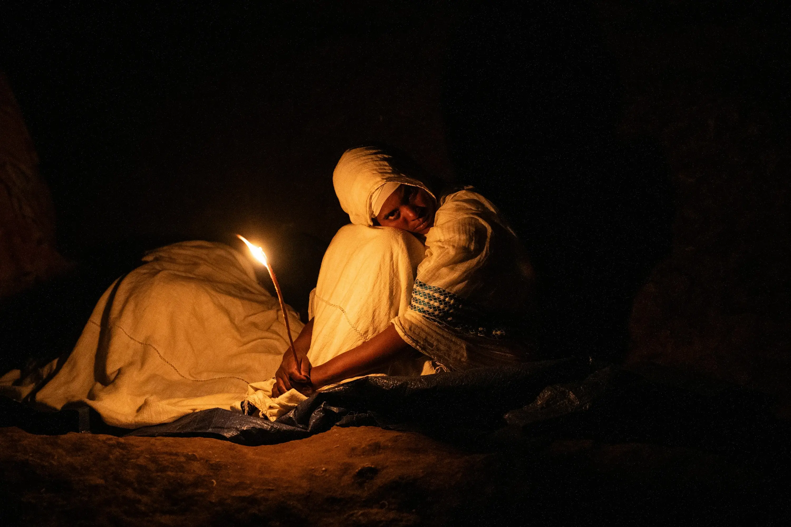
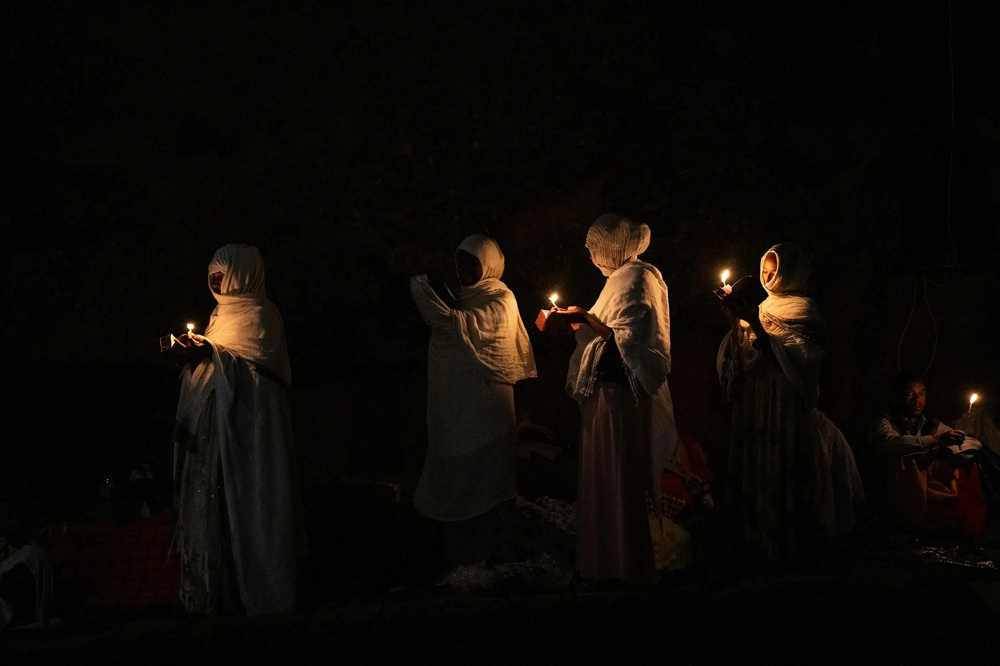
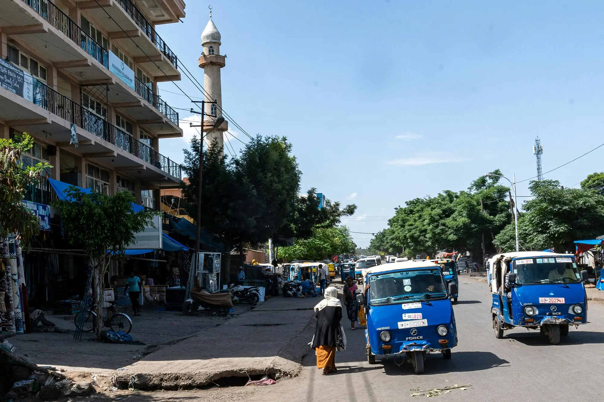
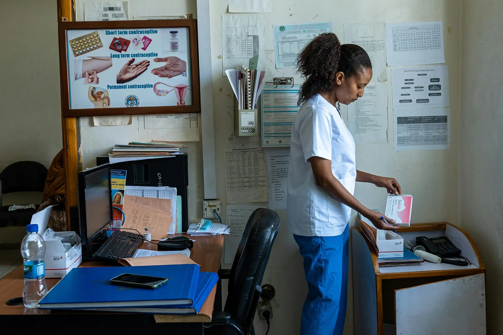
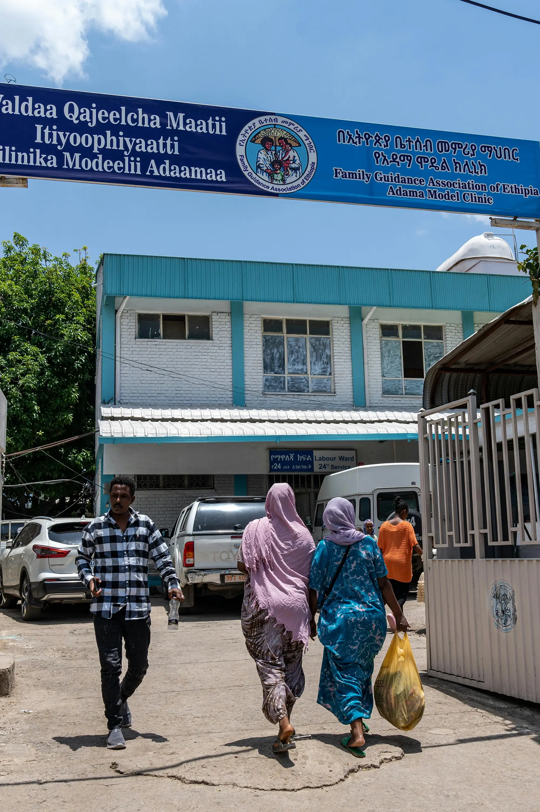
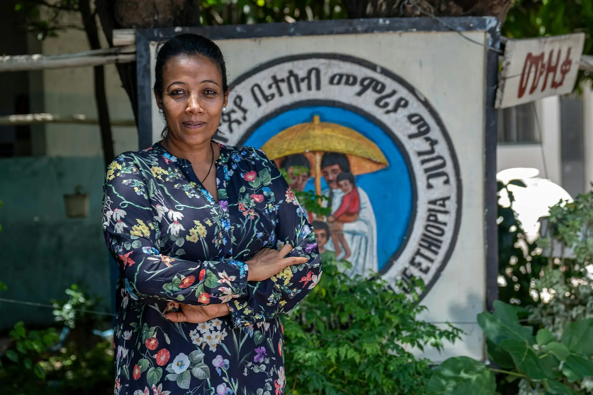
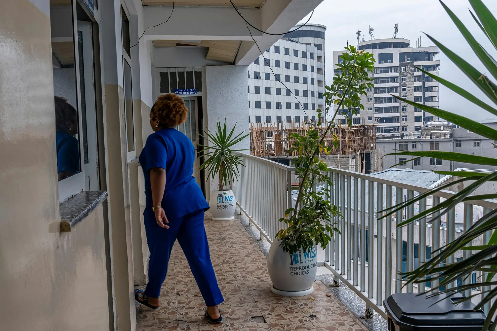

FERTILE GROUND
14 June 2024
Anti-abortion campaigners have their sights set on Ethiopia – a progressive outlier in a region marred by restrictions. Who’s behind the emboldened ‘pro-life’ movement and what’s at stake for women’s rights amid a myriad of other challenges? Bethany Rielly, Maxine Betteridge-Moes and Maya Misikir report from Addis Ababa.
‘Pray to end abortion in Ethiopia’ reads the bumper sticker on a taxi parked outside a family planning clinic in the bustling heart of Addis Ababa. Jarring but easily dismissed, it’s an old tactic which anti-abortion groups have used the world over.
According to staff at the clinic, the driver used to rent a room in a building across the road. He recruited a worker from a nearby cafe to recite Bible verses to service users at the clinic. Using toy foetuses as props, the duo would implore people to ‘choose life’. The building has since been demolished as part of a massive city-wide redevelopment project, but this seemingly small act of protest is linked to a much larger and sturdier movement taking hold in Ethiopia and elsewhere in Africa.
With deep pockets and loud voices, a growing anti-rights movement is aligning itself with the US Christian Right and gaining access to the halls of power, where it is on a mission to end the right to safe and legal abortion.
A REGIONAL OUTLIER
It’s the day before Orthodox Easter Sunday, and from the twentieth floor of our rented Addis apartment, faint chanting from a nearby church can be heard over the steady rumble of traffic and construction. In the streets, cars hurtle past with forlorn looking chickens and goats strapped to the roof, ready to be slaughtered and eaten. Women in white shawls and wooden crosses around their necks prepare for the hours of cooking ahead. Orthodox Christians have avoided meat for two months, and tonight they will finally break their fast.

Women light candles in celebration of Orthodox Easter in Ethiopia, where approximately 43 percent of the population is Orthodox Christian. AMANUEL SILESHI
DOMINANT RELIGIONS OF ETHIOPIA
Orthodox Christians
43%
Muslim
33%
Protestant Christians
20%
It’s a rare success story in a region where the procedure is largely prohibited except to save a pregnant person’s life. But where recent feminist movements to legalize abortion have been characterized by large and vibrant street protests, such as those in Latin America, Ethiopia’s journey was more subtle. Led by local doctors, women’s groups and lawyers, a determined coalition successfully pressured parliamentarians to reform the 1957 law in order to legally permit abortion in cases of rape, incest and foetal impairment, as well as for women with disabilities and minors.
ABORTION ACCESS IN EAST AFRICA
On Request
Broad Social Or Economic Grounds
To Preserve Health
To Save A Person's Life
Prohibited Altogether
Data from the Center for Reproductive Rights 'The World's Abortion Laws'. To explore the full map, click here
Campaigners wanted a change for one reason: to end the epidemic of women dying from unsafe abortions, the leading cause of maternal death in Ethiopia at the time. Entire hospital wards were dedicated to treating women who had developed sepsis or other life-threatening complications from botched abortions. The coalition brought politicians to these wards to see first-hand the harms of the abortion ban, which ironically had just one exception: to save the woman’s life. The stench of death still haunts the memories of Ethiopian doctors and nurses who practised medicine before the reform. Tedros Ghebreyesus, the current head of the World Health Organization, was Ethiopia’s health minister at the time the 2005 abortion law came into effect. His legacy, and the legacy of the wards, continue to galvanize support for legal abortion today.
‘Since safe abortion was not available, women were going to backstreet abortion instead,’ says Demeke Desta, a doctor and the country director for Ipas, a global reproductive rights NGO. ‘They were inserting plant roots into their reproductive organs, inserting wires that perforated the uterus and became infected. I treated so many women and lost so many of them.’
‘I treated so many women and lost so many of them’
Sustained pressure from the coalition on top of the strong political will of successive Ethiopian governments helped cascade the 2005 legislation into action, and within a decade maternal mortality from unsafe abortion plummeted from 32 percent to less than 10 percent. The law was revised in 2013, shortly after Ethiopia ratified the Maputo Protocol – the first treaty signed by 43 African nations that recognizes abortion, under certain conditions, as a human right. While there is still a way to go to ensure full access to the right to safe abortion on demand, the 2005 reforms have undoubtedly been lifesaving.
MAPUTO PROTOCOL RATIFICATION MAP
IN THE SHADOWS
‘It looks like nothing is happening, but they are strongly working under the surface,’ Abebe Shibru, MSI’s country director says from his office in the Bole area of Addis. Recently, he notes, opposition tactics have shifted. ‘Before, the anti-choice groups were targeting the public, they were more visible, shouting, demonstrating and telling people abortion is a sin,’ he says. ‘Now they are targeting politicians, decision-makers, safe abortion practitioners – they are trying to cripple the system.’
d3c1.webp)
Shibru noticed the shift around the same time as the seismic Dobbs ruling that overturned the constitutional right to abortion in the US. Early research into the global impact of this decision has linked it to the reversal of positive steps towards liberalizing abortion policies in Kenya and Nigeria.
One of the US Christian Right groups that’s pushing its influence into Africa is Family Watch International (FWI), an Arizona-based Mormon organization that describes its work as ‘strengthening the family’. FWI has a track record of influencing regressive policies on SRHR in several countries. In 2019, it appointed an Ethiopian celebrity physician named Seyoum Antonios as its Africa director. As the home of the African Union headquarters, Addis offers a gateway to a host of the continent’s leaders and policymakers.
Shortly after the overturning of Roe v Wade, Antonios took to his YouTube channel to call on the Ethiopian government to follow in the footsteps of the US. If the ‘greatest democracy in the world’ doesn’t allow abortions, he argued, why should we?
PRO-LIFE PIONEERS
The sticky fingers of US Christian Right groups are all over Ethiopia’s anti-abortion movement. Antonios and his wife Saba set up what could be considered Ethiopia’s first organized ‘pro-life’ group in 2007. United for Life Ethiopia (ULE) is listed in the world registry of Heartbeat International, a US-based network of ‘crisis pregnancy centres’ (CPCs). These centres have been found by a series of global investigations to provide ‘deliberate disinformation’ to vulnerable women to coerce them into continuing unwanted pregnancies.

Dinah Monahan, a missionary from Arizona and a Heartbeat International ‘servant leader’, opened the first known CPC in Ethiopia in the southern city of Adama, around 100km from Addis, in 2010. In a video published on a ‘pro-life’ platform, staff at the Living Hope Maternity Home describe how teenage girls and rape victims were persuaded to continue unwanted pregnancies. That institution closed five years later, but another home has since been set up in Addis Ababa. It appears the missionary has had an influence on organized opposition to abortion in Ethiopia. In a recent photo on her group’s Facebook page, she’s pictured next to a man wearing a ‘pray to end abortion’ T-shirt. The man, staff at the MSI clinic confirm, is the same taxi driver who harasses their clients.
Monahan denies that staff at the ministry play a role in the women’s decisions not to have abortions. In a response over email, she says: ‘They changed their mind about abortion (we were not involved at all) and someone told them about how we could assist them. There are people who talk to women going into the abortion clinics offering them educational information, but they are not affiliated with us.’
More worrying are claims made by Monahan to her followers that some healthcare professionals in public hospitals and clinics are referring women seeking abortions to the Christian activists. Antonios and his wife also appear on Monahan’s YouTube channel where they are touted as ‘the original pro-life heroes in Ethiopia’. A practising physician at a private hospital in Addis and an assistant professor at a medical college, Antonios uses YouTube and TikTok to spread harmful pseudo-science, claiming that abortion causes infertility, cancer and depression. The doctor has amassed over one million views on his channels since 2018, where he claims to have ‘prayed with the prime minister’ – himself an evangelical Christian – and has made appearances several times on national TV.
Antonios is also known to preach to his patients. One Ethiopian woman, now living in the US, recalls being treated by the physician in 2019: ‘He was telling me abortions are immoral, homosexuality is a disease… and organizations like the UN are promoting the downfall of our country.’
‘He was telling me abortions are immoral, homosexuality is a disease… and organizations like the UN are promoting the downfall of our country.’
It would be easy to dismiss these unfounded ramblings if Antonios and his wife were not key figures in Africa’s anti-rights ecosystem, touring the continent and coordinating campaigns to halt any semblance of progress on SRHR. Multiple investigations have found links between FWI and several anti-LGBTQI+ bills in Africa. The organization has been accused of helping Uganda pass one of the harshest anti-gay laws in the world last year, and is actively lobbying politicians in Kenya and Ghana to pass similar legislation. FWI has repeatedly denied these accusations.

‘I think it is logical to assume that if this is happening in other African countries, it is a matter of time before it happens here,’ says a rights activist in Addis, who requested anonymity for security reasons. In 2021 Antonios used his growing influence to successfully block comprehensive sexuality education curricula in Ethiopian schools, claiming it ‘sexualizes children’ and gives them ‘easy access to abortion and homosexuality’.
This conflation of abortion rights with LGBTQI+ advocacy is another old tactic of the ‘anti-abortion’ movement, which targets deeply conservative and patriarchal countries to push its ‘family values’ agenda. (Antonios did not respond to requests for comment).
Ongoing social and political tensions in Ethiopia from the fallout of the war in the northern Tigray region, including active fighting in many parts of the country, make issues like abortion an easy scapegoat for religious conservative groups.
‘[People] need a common enemy,’ says the activist. ‘They need a distraction. Generally Ethiopians are not ones to uprise … but now it’s pushing the point beyond which people are tolerant. There are a lot more evangelicals in positions of power than before, and you can see them trying to flex their power.’
‘There are a lot more evangelicals in positions of power than before, and you can see them trying to flex their power.’
PRAYERS IN A PALACE
Constitutionally, Ethiopia is a secular state. Shared spaces and government buildings are supposed to be free from any religious expressions. But the current administration under prime minister Abiy Ahmed has facilitated the entry of religion into the political discourse, while recent years have seen an explosion in evangelical churches in Ethiopia.
‘I think there’s a lot of space for anti-rights movements right now,’ says Sehin Teferra, the founder of feminist organization Setaweet. ‘A lot of it is cloaked behind religious values.’ New alliances are also forming between previous religious foes – the hard-right Evangelicals and hard-right Orthodox – who have found common ground on their anti-rights agendas.
‘It’s a good nexus to meet on,’ Teferra continues. ‘We don’t have this culture of street protest, either pro or against. So you don’t get visible activity around abortion. It’s a very slow erosion, so I think one day we [could] wake up and a woman will find out she can no longer have an abortion.’ Research shows that religious language has recently been seeping into mainstream media, cultivating a platform for anti-abortion messaging. Reforms to Ethiopia’s media law in 2021 mean that religious organizations can now receive broadcasting licences for the first time in the country’s history.
‘I think one day we [could] wake up and a woman will find out she can no longer have an abortion’
The growing influence of fundamentalist religious groups has worrying implications in a country where the situation for women’s rights is already dire. ‘We have a culture that views women as property,’ says Abebe Kebede, who leads the Consortium of Reproductive Health Associations. ‘We have practices where women’s bodies are mutilated in the guise of subduing their sexual promiscuity.’ Despite being criminalized, harmful traditional practices like female genital mutilation persist in Ethiopia. In the Amhara region, 45 percent of girls are married before the age of 18.
‘I KNOW THAT I AM SAVING LIVES’
As concerted efforts by shadowy networks to roll back abortion rights in Africa play out behind the scenes, work in Ethiopia’s family planning clinics continues as normal. In one of MSI’s largest clinics in Addis, we meet Ferket*, 24, who sought a termination after she was impregnated by a colleague who raped her at a work event.
‘I was so scared when I found out I was pregnant,’ she says. ‘After the abortion I felt relieved from the burden.’ Despite meeting the legal criteria for abortion, the young woman says she still feels like a sinner, and kept it a secret from her family. Abortion remains highly stigmatized in Ethiopia, and a lack of awareness about legal rights to the procedure is a huge barrier to accessing care, particularly in rural areas.
And it’s not just clients who face stigma – according to a recent report from Amnesty International, providers, advocates and activists defending abortion worldwide are increasingly facing physical and verbal attacks, intimidation, threats and criminalization, with little to no accountability. Siyane Aniley, an Ethiopian SRHR researcher says that anti-rights figures on social media have accused her and other advocates of promoting LGBTQI+ rights as a ‘hidden agenda’.
‘It was really threatening,’ she says. ‘I felt unsafe just for advocating for young people’s rights to SRHR information and services.’ Homosexuality is a criminal offence in Ethiopia and highly stigmatized.
In Adama, staff in a clinic run by the Family Guidance Association of Ethiopia (FGAE) – a member association of the International Planned Parenthood Federation (IPPF) – describe their experiences of working in a hostile environment. ‘My family forbade me to join FGAE because of abortion,’ says Lydia Tesfaye, a nurse. ‘But if I refuse to provide a service and she goes somewhere else and dies due to complications, my hand is there in her case.’ Occasionally disapproval has turned into violence. Tesfaye recalls how a man wielding a knife threatened her colleague in another clinic where his wife had an abortion. Asked whether these stories worry her, Tesfaye replies: ‘No. Instead they make me stronger to provide these services.’


Eskedar Melesse, the clinic coordinator for FGAE in Adama, says she often hears sermons on the ‘evils’ of abortion at church. ‘It shames you, and makes you feel that you are doing something wrong,’ she says. ‘But I know that I am saving lives.’

Those lives include Amara*, a sex worker, who says she considered suicide after finding out she was pregnant. The 20-year-old also works as a waiter, trying to scrape together enough income to provide for her younger sister who she’s raised alone in the absence of her parents. An outreach volunteer with FGAE’s commercial sex worker programme informed Amara about her options for safe and legal abortion. ‘That was the first time I slept in weeks,’ she says, offering a small smile.
But not everyone is able to access these lifesaving services. Women living in Ethiopia’s conflict zones are particularly vulnerable to any rollbacks in abortion access. It has been widely documented that over the course of the two-year war in Tigray, troops fighting in support of the federal government committed widespread rape against Tigrayan women and girls. Today the healthcare service in the region has all but collapsed, and maternal mortality rates are once again soaring across the region.
Nearly one million people are displaced in Tigray, and one of the few remaining health care centres for survivors of gender-based violence is run by Sister Mulu Mesfin in the region’s capital, Mekelle. ‘Most of the women who come to us are survivors of rape and gang rape,’ she says. ‘Even after the war, they are still repeatedly getting attacked in the [displacement] camps [and] facing domestic violence. They beg at my feet for abortion pills.’
‘Most of the women who come to us are survivors of rape and gang rape, Even after the war, they are still repeatedly getting attacked in the [displacement] camps [and] facing domestic violence. They beg at my feet for abortion pills.’
ON SIDE
Back in Addis Ababa, Demeke and Shibru’s fears over a serious and imminent threat to the 2005 abortion law have subsided. In recent months Ethiopia’s Ministry of Health has shown its commitment to abortion provision by approving the latest guidelines for abortion care services, as well as a self-care manual for women on medication abortion (abortion using pills). The Coalition for Comprehensive Abortion Care, a group of physicians in Ethiopia that works closely with the health ministry, has received verbal assurances from the department that it is aware of the threats and will ‘defend the law by any means’, says Desta. Where physicians are more concerned is the extent to which young healthcare workers could be swayed by anti-rights groups.
A third of abortions in Ethiopia are performed in public hospitals, where the procedure is free of charge. The rest take place in private clinics, predominantly run by international NGOs like MSI and IPPF. Unlike Desta, who experienced the devastating impact of abortion bans on women in the early 2000s, the next generation of doctors are not aware of this history.
‘They don’t know about that story, how women were dying of these complications, so they can easily be attracted to the opposition groups with their false and arrogant arguments,’ he says. Although doctors are legally obliged in Ethiopia to provide abortions if a woman meets the criteria for the procedure, cases of conscientious objection are not uncommon. Doctors who provide abortions also face stigma by their colleagues, says Aniley, who explains that healthcare workers talk of being insulted or accused of profiting from performing terminations, even though the procedure is free.

FICKLE FUNDING
While NGO workers we spoke to stress that the opposition is so far not impacting the provision of safe abortion care in their clinics, funding is a more pressing worry. Foreign donors, including the United States, account for 70 percent of Ethiopia’s family planning budget, making the country highly susceptible to cuts. When then-US President Donald Trump implemented the ‘global gag rule’ – a policy that prohibits foreign NGOs that receive US funding from providing abortion services – it was a major blow. FGAE and MSI refused to comply meaning millions of people lost access to services and the system faltered as a result of programmes ending.
President Joe Biden has since repealed the gag rule, but Desta worries that another Trump presidency could spell disaster in Ethiopia. ‘We will try to find alternative options but I don't think we will have robust funding that will really fill the gap,’ he says.
Meanwhile, groups like FWI have funneled millions of dollars into anti-rights advocacy efforts in Africa and around the world. As Ethiopia continues to face a myriad of social, political and economic challenges, abortion rights – and sexual and reproductive health and rights more broadly – can easily fall down the list of priorities. But the human rights and public health implications of Ethiopia’s abortion law go far beyond the walls of clinics, or the rented room of a ‘pro-life’ taxi driver. As Teferra says: ‘Ethiopian women are losing our rights left, right and centre as it is. Losing this would be such a terrible mistake, not just for women but for the country in general.’
This story has been produced with funding support from IPPF.
*Names have been changed to protect identities.
This article also appears in print in our July/ August 2024 issue, Abortion: Why is your body still a battleground?
AUTHORS

BETHANY RIELLY
Bethany Rielly is a New Internationalist co-editor based in Barcelona. She has written about topics including refugees, migration, protest, human rights and state violence and surveillance.

MAXINE BETTERIDGE-MOES
Maxine Betteridge-Moes is the digital editor at New Internationalist. She covers stories about human rights, conflict, global development and sexual and reproductive health and rights for numerous publications.

MAYA MISIKIR
Maya is a freelance reporter based in Addis Abeba, Ethiopia. She runs Sifter, a newsletter on Ethiopia, where she curates the week's top five stories focusing on human rights.